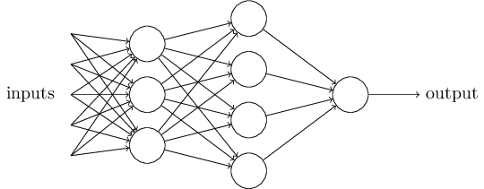

I recently bought the excellent book Hand-On Machine Learning with SciKitLearn and TensorFlow and decided to write my own simple neural network in python and numpy. Another really clear tutorial I've found is the online book by Michael Nielson, available here. Lots of my code is based heavily on his example!
Neural Networks
So what is a Neural Network? At their core, neural networks are simple a collection of 'neurons'. These neurons are little blocks of linear algebra operators which take a number of inputs and give you back an output. If we take the simple case of just having one neuron, things look deceptively simple!
Say you want to decide whether or not to go and play football in the park. A number of outside factors might influence this decision, but we'll just look at two: "is the weather sunny?" and "is anyone around to go and play with you?". These are both yes or no questions, but you might assign different importances to their answers. Perhaps it's a lovely sunny day but you'd rather sit inside and watch TV. Or perhaps there no one is around to play with but you're happy practising your free-kicks on your own anyway. You'd assign different weights to the inputs before making your decision.
Another factor to think about is how much you enjoy playing football. If you don't like it very much at all, no matter if it's sunny and there are loads of people playing, you're probably still going to stay indoors. On the other hand, if you absolutely love football then you're more likely to go and play in the pouring rain! We'd call this internal factor your bias for getting an ice-cream. .
To stretch this metaphor a bit far, we're actually going to put numbers on these weights- so, say, we'll give the question 'is it sunny?' a weight of 1.0 (because you'd go and play rain-or-shine) and 'are your friends free?' a weight of 3.0 (since you don't like playing on your own). Your internal bias is 2.0.
Now, an artificial neuron takes the two inputs ("Sunny?" and "Anyone else playing?") and multiplies them by a numerical weights we've assigned. It then simply says 'Is this number greater than the bias?' and either outputs 1 (if it is) or 0 (if it isn't). So, in our case, if the weather is good but your friends are busy, the neuron comes up with 1 x1 (the good weather weight) + 0 x 3 (the friends weight). Since this is less than your bias of 2, the neuron outputs 0 (and you don't go and play football). If your friends were playing, but it was raining, the neuron would output 1 (since 0x1 +1x3 >2) and you would go and play.
The key to neural networks is to think about things the other way around. Instead of knowing the weights and biases to start with, we know the outcomes- for example, we could keep a log of the weather and number of other players every day for a year, as well as the number of times you played football. We'd then train the neuron on all of the data by fiddling with the values of the weights and biases until it was able to reproduce the historical outcomes with the inputs- and then use these 'best guess' weights and biases to predict whether or not you're going to play football tomorrow!
Implementation
Things are obviously a bit more complicated than this in reality, of course. We can't use a simple 'step' function for the neuron's output (either 1 or 0), because way we train a network requires that a tiny change we make to the weights and biases leads to tiny changes in the output. With a step function, it's not possible to make a small change- it's all or nothing! We instead use functions which behave a bit like the step function, but still have smooth behaviour- for example a sigmoid function or a a general class called 'Rectified Linear Units' (ReLUs).
When we have many neurons acting together, the simple weights and bias numbers before turn into a weights matrix and a bias vector. We arrange these neurons in a number of layers, with the simplest case having each neuron in the first layer sending its outputs to each neuron in the second layer. An example of these connections, from Michael Nielson's book, are shown below:

Digit Classification
A classic place to learn and practice with neural networks is the MNIST dataset. This is a collection of 60,000 hand written digits from 0-9, packaged as a 28 pixel by 28 pixel image and a label of the correct answer for that image. Michael Nielson talks you through building a neural network in python with 28*28=784 inputs (one per pixel), one 'hidden' layer of neurons to do the thinking and 10 outputs (which will be the probability that the input digit is a 0, 1, 2, etc.)
The key to the whole process is the 'backpropogation' algorithm, which takes the difference between the network's prediction and the actual label, then propagates these errors backwards in order to adjust the weights and biases. His code uses a neat for loop for this, but I couldn't quite get my head around it until I'd written it out simply and without the loop.
When I tested it, the neural network gets the classification of an unseen set of handwritten digits correct 95% of the time! I tried it out myself by sketching a quick number 9 in paint, then downscaling the image to be 28x28 pixels and running it through the code- and it was correct! Even though I've written the code myself, it still feels a bit like black magic...
The network takes a while to run through all of the training data (around 10 minutes), but once you've worked out the best weights and biases, classifying a new digit takes no time at all. The whole code is available on github, here.
TensorFlow
Of course, hard coded for loops aren't great for extending this network to more layers, or choosing a different optimisation method. For doing real machine learning problems, you'll need something like TensorFlow. I wrote a similar network using the tensorflow tools (with more neurons and some extra bells and whistles), which you can also find on github- this one gets to around 98% successful classification rate.
TensorFlow also has some very nice options for analysing your network's performance. Here is a screenshot of the accuracy of my network, with each run corresponding to different tweaks of the various hyperparameters (e.g the type of optimizer, the dropout probability, etc).

The green run uses the 'Adam' optimiser, but I'd set the learning rate at too large a value- it's interesting how these choices can make a good 3-4% difference on the outcomes!
The best networks can reach >99% accuracy (such as, for example, this one). They do this using a number of different techniques, such as augmenting the training data (by e.g rotating or zooming the numbers slightly, to build a larger training set) and/or applying 'convolutional neural networks' which can apply learnable filters to the images beforehand.
Next steps
My next steps are to look into convolutional neural networks a bit more, or neural networks which work on time series ata ('Recurrent' neural nets). I'm also going to see how these tools can be applied to some of the Kaggle datasets, or maybe even a competition...